유통관리사-2급 (2020-06-21 기출문제)
1과목: 유통물류일반
1. 물류관리를 위한 정보기술에 대한 내용으로 옳지 않은 것은?
- 기업내 부서 간 정보전달을 통한 전사적정보관리를 위해 EDI기술이 보편적으로 사용된다.
- 바코드기술의 상품에 대한 표현능력의 한계, 일괄인식의 어려움, 물류량 급증 시 대처능력의 저하 등 문제점을 해결할 수 있는 기술이 RFID이다.
- DPS는 표시장치와 응답을 일체화시킨 시스템으로, 창고, 배송센터, 공장 등의 현장에서 작업지원시스템으로 활용되고 있다.
- OCR은 광학문자인식으로 팩스를 통해 정보를 보낸 경우 이를 컴퓨터의 스캐닝이 문자를 인식하여 이것을 컴퓨터에 입력하는 기술로 활용될 수 있다.
- 사전에 가격표찰에 상품의 종류, 가격 등을 기호로 표시해두고, 리더 등으로 그것을 읽어 판매정보를 집계하는데 사용되는 기술은 POS이다.
(정답률: 43%)

2. 물류아웃소싱 성공전략에 대한 설명으로 옳지 않은 것은?
- 물류아웃소싱이 성공하려면 반드시 최고경영자의 관심과 지원이 필요하다.
- 지출되는 물류비용을 정확히 파악하여 아웃소싱 시비용절감효과를 측정해야 한다.
- 물류아웃소싱의 궁극적인 목표는 현재와 미래의 고객만족에 있음을 잊지 말아야 한다.
- 물류아웃소싱의 기본 목표는 물류비용절감을 통한 효율성의 향상에만 있으므로 전체 물류시스템을 효율성 위주로 개편할 필요가 있다.
- 물류아웃소싱의 목적은 기업 전체의 전략과 조화로워야한다.
(정답률: 83%)
3. 정량주문법과 정기주문법의 비교 설명으로 옳지 않은 것은?
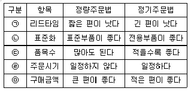
- ㉠
- ㉡
- ㉢
- ㉣
- ㉤
(정답률: 57%)
4. 실제 소비자 주문의 변화 정도는 적은데 소매상과 도매상을 거쳐 상위단계인 제조업체에 전달되는 변화의 정도는 크게 증폭되는 효과를 설명하는 용어로 가장 옳은 것은?
- ABC효과
- 채찍효과
- 베블런효과
- 바넘효과
- 후광효과
(정답률: 76%)
5. 물적 유통관리에 대한 설명으로 옳지 않은 것은?
- 상품을 적절한 시기에 맞추어 운반해야 하므로 어떤 운송수단을 이용하느냐가 비용과 상품의 상태, 기업의 이익에도 영향을 준다.
- 물적 유통관리를 합리화하게 되면 고객서비스 수준을 증가시킬 수 있다.
- 인건비 상승 때문에 나타나는 인플레 환경 하에서도 물적 유통관리를 통해 원가절감을 할 수 있다.
- 소비자 욕구가 다양화됨에 따라, 보다 많은 종류의 상품을 재고로 보유하기 위한 경우 효율적인 물적 유통관리가 필요하다.
- 상품의 운송이나 보관에는 하역작업이 따르게 되는데, 물류비용 중 가장 큰 비율을 차지하는 활동이 하역이다.
(정답률: 74%)
6. 식스시그마의 실행단계를 순서대로 나타낸 것으로 가장 옳은 것은?
- 정의 - 분석 - 개선 - 통제 - 측정
- 정의 - 측정 - 분석 - 개선 - 통제
- 측정 - 분석 - 정의 - 통제 - 개선
- 측정 - 정의 - 통제 - 분석 - 개선
- 분석 - 정의 - 측정 - 통제 - 개선
(정답률: 43%)
7. 마음이 약한 김과장은 팀원들의 인사고과를 전부 보통으로 평가하였다. 이와 관련된 인사고과의 오류로 가장 옳은 것은?
- 후광효과
- 관대화 경향
- 가혹화 경향
- 중심화 경향
- 귀인상의 오류
(정답률: 55%)
8. 아래 글상자에서 경영전략 수립을 위한 환경분석 중 전략과제의 도출 순서가 옳게 나열된 것은?
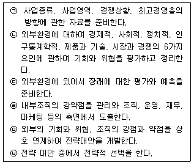
- ㉤ - ㉥ - ㉠ - ㉡ - ㉢ - ㉣
- ㉥ - ㉠ - ㉡ - ㉢ - ㉣ - ㉤
- ㉠ - ㉡ - ㉢ - ㉣ - ㉤ - ㉥
- ㉡ - ㉢ - ㉣ - ㉤ - ㉥ - ㉠
- ㉢ - ㉣ - ㉤ - ㉥ - ㉠ - ㉡
(정답률: 75%)
9. 권력의 원천과 그 내용에 대한 설명 중 가장 옳지 않은 것은?
- 강압적 권력은 권력행사자가 권력수용자를 처벌할 수 있다고 생각한다.
- 합법적 권력은 일반적으로 비공식적 지위에서 나온다고 볼 수 있다.
- 보상적 권력은 급여인상, 승진처럼 조직이 제공하는 보상에 의해 권력을 가지게 된다.
- 전문적 권력은 특정 분야나 상황에 대한 높은 지식이 있을 때 발생한다.
- 준거적 권력은 다른 사람이 그를 닮으려고 할 때 생기는 권력이다.
(정답률: 84%)
10. 프랜차이즈 유통사업시스템에 대한 내용으로 옳지 않은 것은?
- 본부가 자본을 투입하여 매장을 직접 운영하고, 가맹점은 기술과 노하우를 제공하여 빠른 속도로 사업이 전개될 수 있도록 한다.
- 본부방침에 변경이 있을 경우 가맹점은 그 의사결정에 참여하기 힘들다.
- 가맹점과 본부간의 계약이 본부의 의사를 따라야 하는 종속계약이기 때문에 계약내용에 대하여 가맹점 희망자의 요구사항이나 조건 등을 반영하기 힘들다.
- 불리한 조건의 가맹계약을 체결하여 계약해지 시 가맹점이 손해를 입는 경우가 발생할 수 있다.
- 본부 사세가 약화되는 경우 본부로부터 지도와 지원을 충분히 받기 어려워진다.
(정답률: 60%)
11. 자본구조(capital structure)에서 타인자본(부채)의 하나인 장기부채(고정부채)의 종류로 옳지 않은 것은?
- 사채
- 예수금
- 외국차관
- 장기차입금
- 장기성지급어음
(정답률: 65%)
12. 아래 글상자에서 경영조직 관련 사업부제(operating division)의 장점으로 옳지 않은 것은?
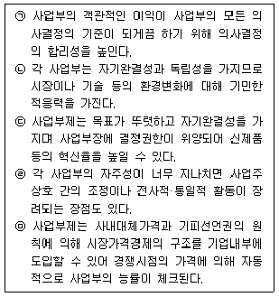
- ㉠
- ㉡
- ㉢
- ㉣
- ㉤
(정답률: 64%)
13. 아래 글상자에서 서술된 경영은 무엇에 대한 내용 설명인가?
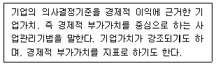
- 펀경영
- 크레비즈
- 지식경영
- 가치창조경영
- 전략적기업경영
(정답률: 68%)
14. 한 유통업체에서는 A상품을 연간 19,200개 정도 판매할 수 있을 것으로 예상하고 있다. A상품의 1회 주문비가 150원, 연간 재고유지비는 상품 당 16원이라고 할 때 경제적주문량(EOQ)은?
- 600개
- 650개
- 700개
- 750개
- 800개
(정답률: 51%)
15. 아래 글상자의 내용과 같은 마케팅제휴(marketing alliance) 전략을 설명하는 용어는?
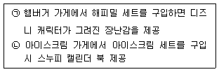
- 촉진제휴(promotional alliance)
- 로지스틱스 제휴(logistics alliance)
- 가격제휴(price alliance)
- 유통제휴(distributional alliance)
- 서비스제휴(service alliance)
(정답률: 71%)
16. Ansoff의 제품/시장확장 그리드에서 신제품으로 기존 시장에 침투하는 전략은?
- 시장침투(market penetration) 전략
- 시장개발(new market development) 전략
- 제품개발(product development) 전략
- 다각화(diversification) 전략
- 통합화(integration) 전략
(정답률: 65%)
17. 어떤 두 가지 생산품을 각각의 기업에서 생산하는 것보다 한 기업에서 여러 품목을 동시에 생산하는 것이 비용이 적게 들어 더 유리한 경우를 가리키는 용어로 가장 옳은 것은?
- 손익분기점
- 범위의 경제
- 규모의 경제
- 경로커버리지효과
- 구색효과
(정답률: 53%)
18. 유통환경을 구성하는 요소들에 대한 설명 중 가장 옳지 않은 것은?
- 경제적 환경은 원재료 수급에서부터 제품 판매에 이르기까지 기업의 모든 경제적 활동과 연계되어 있다.
- 기술적 환경은 하루가 다르게 변화추세가 가속화되고 있다.
- 법률적 환경의 경우 규정의 변화에 따라 적응해가야한다.
- 사회적 환경은 가치관과 문화 등으로 구성되어 획일적이기에 순응해야 한다.
- 경제적 환경 중 국가의 경제정책은 기업에게 직접적인 영향을 미치게 된다.
(정답률: 78%)
19. 아래 글상자 내용은 기업의 사회적 책임이 요구되는 이유를 설명한 것이다. ( )에 들어갈 용어로 가장 옳은 것은?
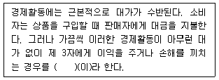
- 시장실패
- 외부효과
- 감시비용
- 잔여손실
- 대리인문제
(정답률: 65%)
20. 독자적인 상품 또는 판매ㆍ경영 기법을 개발한 체인본부가 상호ㆍ판매방법ㆍ매장운영 및 광고방법 등을 결정하고, 가맹점으로 하여금 그 결정과 지도에 따라 운영하도록 하는 형태의 체인사업으로 옳은 것은?
- 직영점형 체인사업
- 프랜차이즈형 체인사업
- 임의가맹점형 체인사업
- 조합형 체인사업
- 유통업상생발전협의회 체인사업
(정답률: 81%)
21. 최근 국내외 유통산업의 동향과 추세에 대한 설명으로 옳지 않은 것은?
- 소비양극화에 따라 개인 가치에 부합하는 상품에 대해서는 과도한 수준의 소비가 발생하고 관심이 적은 생필품은 저가격 상품을 탐색하는 성향이 증가하고 있다.
- 소비자의 멀티채널 소비 증가로 유통업체의 옴니채널 구축이 가속화되고 있다.
- 복합쇼핑몰, 카테고리킬러 등 신규업태가 탄생하고 업태 간 경계가 모호해지고 있다.
- 업태 간 경쟁심화에 따라 이익보다는 매출에 초점을 둔 경쟁이 심화되고 있다.
- 모바일과 IT기술 확산에 따른 리테일테크(retail+tech) 발달이 가속화 되고 있다.
(정답률: 70%)
22. 수직적유통경로에 관한 설명 중 가장 옳지 않은 것은?
- 전체 유통비용을 절감할 수 있다.
- 높은 진입장벽을 구축할 수 있어 새로운 기업의 진입을 막을 수 있다.
- 필요한 자원이나 원재료를 보다 안정적으로 확보할 수 있다.
- 마케팅 비용을 절감하고 경쟁기업에 효율적으로 대응 할 수 있다.
- 동일한 유통경로 상에 있는 기관들이 독자성은 유지하면서 시너지 효과도 얻을 수 있다.
(정답률: 66%)
23. 아래 글상자 ㉠~㉡에 들어갈 단어가 옳게 나열된 것은?
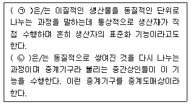
- ㉠ 집적, ㉡ 분류(등급)
- ㉠ 배분, ㉡ 구색
- ㉠ 구색, ㉡ 분류(등급)
- ㉠ 분류(등급), ㉡ 배분
- ㉠ 구색, ㉡ 배분
(정답률: 68%)
24. 아래 글상자 내용 중 소비자를 위한 소매상의 기능으로 옳은 것을 모두 고르면?
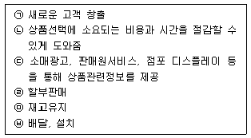
- ㉠, ㉡
- ㉡, ㉢, ㉤
- ㉢, ㉤, ㉥
- ㉡, ㉣, ㉤, ㉥
- ㉡, ㉢, ㉣, ㉥
(정답률: 70%)
25. 아래의 글상자 내용 중 프레드릭 허즈버그(Frederick Herzberg)가 제시한 2요인이론이 동기요인으로 파악한 요인들만 옳게 나열한 것은?
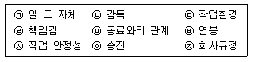
- ㉡, ㉢, ㉥
- ㉠, ㉣, ㉧
- ㉣, ㉤, ㉧
- ㉦, ㉧, ㉨
- ㉤, ㉥, ㉨
(정답률: 55%)
2과목: 상권분석
26. 소매업태들은 주력상품에 따라 서로 다른 크기의 상권을 확보할 수 있는 입지를 선정한다. 필요로 하는 상권 크기가 커지는 순서에 따라 소매업태들을 가장 옳게 배열한 것은?
- 대형마트 < 백화점 < 명품전문점
- 대형마트 < 명품전문점 < 백화점
- 백화점 < 대형마트 < 명품전문점
- 명품전문점 < 대형마트 < 백화점
- 명품전문점 < 백화점 < 대형마트
(정답률: 56%)
27. 아래의 내용 중에서 중심업무지역(CBD: Central Business District)의 입지특성에 대한 설명으로 옳지 않은 것은?
- 대중교통의 중심이며 백화점, 전문점, 은행 등이 밀집되어 있다.
- 주로 차량으로 이동하여 교통이 매우 복잡하고 도보 통행량은 상대적으로 많지 않다.
- 상업활동으로 많은 사람을 유인하지만 출퇴근을 위해서 이 곳을 통과하는 사람도 많다.
- 소도시나 대도시의 전통적인 도심지역을 말한다.
- 접근성이 높고 도시내 다른 지역에 비해 상주인구가 적다.
(정답률: 68%)
28. 중심성지수는 전체 상권에서 지역이 차지하는 중심성을 평가하는 한 지표이다. 중심성지수에 대한 설명으로 가장 옳지 않은 것은?
- 한 지역의 거주인구에 대한 소매인구의 비율이다.
- 지역의 소매판매액이 커지면 중심성지수도 커진다.
- 지역의 소매인구는 소매업에 종사하는 거주자의 숫자이다.
- 다른 여건이 변하지 않아도 거주인구가 감소하면 중심성지수는 커진다.
- 중심성지수가 클수록 전체 상권 내의 해당지역의 중심성이 강하다고 해석한다.
(정답률: 45%)
29. 입지의 매력도 평가 원칙 중 유사하거나 보완적인 소매 업체들이 분산되어 있거나 독립되어 있는 경우보다 군집하여 있는 경우가 더 큰 유인잠재력을 가질 수 있다는 원칙으로 가장 옳은 것은?
- 보충가능성의 원칙
- 고객차단의 원칙
- 동반유인의 법칙
- 접근가능성의 원칙
- 점포밀집의 원칙
(정답률: 58%)
30. 소매점포의 부지(site)를 선정할 때 고려해야 할 가장 중요한 기준으로 옳은 것은?
- 부지의 고객접근성
- 부지의 주요 내점객
- 점포의 가시성
- 점포의 수익성
- 점포의 임대료
(정답률: 41%)
31. 주변 환경에 따라 분류한 상권유형별로 설명한 상대적 특징으로 가장 옳지 않은 것은?
- 대학가 상권의 경우 가격에 민감하며 방학 동안 매출이 급감한다.
- 역세권 상권의 경우 주부 및 가족단위 중심의 소비 행동이 이루어진다.
- 백화점이나 대형마트는 쾌적한 쇼핑환경이 중요하다.
- 오피스상권은 점심시간이나 퇴근시간에 유동인구가 많다.
- 번화가상권은 요일과 시간대에 관계없이 높은 매출을 보인다.
(정답률: 68%)
32. 상권 및 입지에 대한 아래의 내용 중에서 옳지 않은 것은?
- 상권의 성격과 업종의 성격이 맞으면 좋지 않은 상권에서도 좋은 성과를 올릴 수 있다.
- 상권이 좋아야 좋은 점포가 많이 모여들고 좋은 점포들이 많이 모여들면 상권은 더욱 강화된다.
- 소매점을 개점하기 위해서는 점포 자체의 영업능력도 중요하지만 상권의 크기나 세력도 매우 중요하다.
- 동일한 상업지구에 입지하더라도 규모 및 취급상품의 구색에 따라 개별점포의 상권의 범위는 달라질 수 있다.
- 지구상권을 먼저 정하고 지역상권을 정하는 것이 일반적인 순서이다.
(정답률: 71%)
33. 상권을 표현하는 다양한 기법 중에서 소비자의 점포선택 등확률선(isoprobability contours)을 활용하기에 가장 적합한 상권분석 방법은?
- 회귀분석(regression analysis)
- 허프모델(Huff model)
- 유사점포법(analog method)
- 체크리스트법(check list)
- 컨버스의 상권분기점(breaking point)모형
(정답률: 48%)
34. 아래의 글상자에서 설명하는 쇼핑센터의 공간구성요소 로서 가장 옳은 것은?
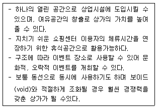
- 통로(path)
- 테난트(tenant)
- 지표(landmark)
- 데크(deck)
- 선큰(sunken)
(정답률: 54%)
35. 소매상권에 대한 아래의 내용 중에서 옳지 않은 것은?
- 신호등의 위치, 좌회전로의 존재, 접근로의 경사도 등도 점포에 대한 접근성에 영향을 미칠 수 있다.
- 경관이 좋고 깨끗하다든지, 도로 주변이 불결하다든지 하는 심리적 요소도 상권범위에 영향을 미친다.
- 특정상권내 고객들의 소득수준이 증가할수록 고객들의 해당 상권이용 빈도는 높아진다.
- 상권의 구매력은 상권 내의 가계소득수준과 가계숫자의 함수로 볼 수 있다.
- 상권분석을 통해서 촉진활동 등 기본적 마케팅활동의 방향을 파악할 수 있다.
(정답률: 55%)
36. 상권 내 관련 점포들이 제공하는 서비스에 대한 고객들의 구체적인 만족 또는 불만족 요인들을 파악하는 조사방법으로 가장 옳은 것은?
- 상권에 대한 관찰조사
- 심층면접을 통한 정성조사
- 설문조사를 통한 정량조사
- 상권에 대한 일반정보의 수집
- 조사 자료에 근거한 상권지도의 작성
(정답률: 50%)
37. 상권을 분석할 때 이용하는 공간상호작용모형(SIM: Spatial Interaction Model)에 해당하는 내용으로 옳지 않은 것은?
- 레일리(Reilly)의 소매중력법칙과 회귀분석모델은 대표적인 SIM이다.
- 한 점포의 상권범위는 거리에 반비례하고 점포의 유인력에 비례한다는 원리를 토대로 한다.
- 접근성과 매력도를 교환하는 방식으로 대안점포들을 비교하고 선택한다고 본다.
- 소비자의 실제 선택자료를 활용하여 점포 매력도와 통행거리와 관련한 모수(민감도) 값을 추정한다.
- 허프모델과 MNL모델은 상권특성을 세밀하게 반영하는 SIM들이다.
(정답률: 30%)
38. 지리정보시스템(GIS)의 활용으로 과학적 상권분석의 가능성이 높아지고 있는데 이와 관련한 설명으로 적합하지 않은 것은?
- 컴퓨터를 이용한 지도작성(mapping)체계와 데이터 베이스관리체계(DBMS)의 결합이라고 볼 수 있다.
- GIS는 공간데이터의 수집, 생성, 저장, 검색, 분석, 표현등 상권분석과 연관된 다양한 기능을 기반으로 한다.
- 대개 GIS는 하나의 데이터베이스와 결합된 하나의 지도 레이어(map layer)만을 활용하므로 강력한 공간정보 표현이 가능하다.
- 지도레이어는 점, 선, 면을 포함하는 개별 지도형상(map features)으로 주제도를 표현할 수 있다.
- gCRM이란 GIS와 CRM의 결합으로 지리정보시스템 (GIS) 기술을 활용한 고객관계관리(CRM) 기술을 가리킨다.
(정답률: 74%)
39. 인구 20만명이 거주하고 있는 a도시와 30만명이 거주하고 있는 b도시 사이에 인구 5만명이 거주하는 c도시가 있다. a와 c도시 사이의 거리는 10km이고 b와 c도시간 거리는 20km이다. c도시 거주자들이 a, b도시에서 쇼핑한다고 할 때 레일리(Reilly)의 소매중력법칙을 활용하여 a도시에서의 구매비율을 계산한 값으로 가장 옳은 것은?
- 약 25%
- 약 43%
- 약 57%
- 약 66%
- 약 73%
(정답률: 29%)
40. 상업지 주변의 도로나 통행상황 등 입지조건과 관련된 설명으로 가장 옳지 않은 것은?
- 유동인구의 이동경로상 보행경로가 분기되는 지점은 교통 통행량의 감소를 보이지만 합류하는 지점은 상업지로 바람직하다.
- 지하철역에서는 승차객수보다 하차객수가 중요하며 일반적으로 출근동선보다는 퇴근동선일 경우가 더 좋은 상업지로 평가된다.
- 상점가에 있어서는 상점의 가시성이 중요하므로 도로와의 접면넓이가 큰 점포가 유리하다고 볼 수 있다.
- 건축용지를 갈라서 나눌 때 한 단위가 되는 땅을 각지라고 하며 가로(街路)에 접면하는 각의 수에 따라 2면각지, 3면각지 등으로 불린다.
- 2개 이상의 가로(街路)에 접하는 각지는 일조와 통풍이 양호하며 출입이 편리하고 광고선전의 효과가 높으나 소음이 심하며 도난과 재해의 위험이 높을 수 있다.
(정답률: 44%)
41. 소매상권에 대한 중요한 이론 중의 하나인 소매인력이론에 대한 설명으로 옳지 않은 것은?
- 소매인력이론은 고객은 경쟁점포보다 더 가깝고 더 매력적인 점포로 끌려간다는 가정하에 설명을 전개한다.
- 소매인력이론은 중심지이론에서 말하는 최근거리가설이 적용되기 어려운 상황이 있을 수 있다고 본다.
- 도시간의 상권경계를 밝히는 것을 목적으로 한다.
- Converse의 무차별점 공식은 두 도시간의 상대적인 상업적 매력도가 같은 점을 상권경계로 본다.
- 고객분포도표(customer spotting map)를 작성하는 것이 궁극적인 목표이다.
(정답률: 42%)
42. 점포 개점에 있어 고려해야할 법적 요소와 관련된 설명 중 가장 옳지 않은 것은?
- 용도지역이 건축 가능한 지역인지 여부를 관련 기관을 통해 확인한다.
- 학교시설보호지구 여부와 거리를 확인한다.
- 건폐율이란 부지 대비 건물 전체의 층별 면적합의 비율을 말한다.
- 용적률이란 부지면적에 대한 건축물의 연면적의 비율로 부지 대비 총건축 가능평수를 말한다.
- 용도지역에 따라 건폐율과 용적률은 차이가 발생하기도 한다.
(정답률: 58%)
43. 둥지내몰림 또는 젠트리피케이션(gentrification)에 관한 내용으로 가장 옳지 않은 것은?
- 낙후된 도심 지역의 재건축·재개발·도시재생 등 대규모 도시개발에 부수되는 현상
- 도시개발로 인해 지역의 부동산 가격이 급격하게 상승 할 때 주로 발생하는 현상
- 도시개발 후 지역사회의 원주민들의 재정착비율이 매우 낮은 현상을 포함
- 상업지역의 활성화나 관광명소화로 인한 기존 유통 업체의 폐점 증가 현상을 포함
- 임대료 상승으로 인해 대형점포 대신 다양한 소규모 근린상점들이 입점하는 현상
(정답률: 58%)
44. 유통가공을 수행하는 도매업체의 입지선정에는 공업입지 선정을 위한 베버(A. Weber)의 “최소비용이론”을 준용 할 수 있다. 총물류비만을 고려하여 이 이론을 적용할 때, 원료지향형이나 노동지향형 대신 시장지향형입지를 택하는 것이 유리한 조건으로 가장 옳은 것은?
- 유통가공으로 중량이 감소되는 경우
- 부패하기 쉬운 완제품을 가공·생산하는 경우
- 제품수송비보다 원료수송비가 훨씬 더 큰 경우
- 미숙련공을 많이 사용하는 노동집약적 유통가공의 경우
- 산지가 국지적으로 몰려 있는 편재원료의 투입 비중이 높은 경우
(정답률: 62%)
45. 소매점포의 상권과 제공하는 유통서비스의 상호관계에 대한 설명으로 가장 옳지 않은 것은?
- 최소판매단위가 작을수록 상권의 크기는 줄어든다.
- 공간적 편리성에 대한 소비자의 요구가 강할수록 상권의 크기는 축소된다.
- 일반적으로 오프라인점포보다 온라인점포의 배달시간이 길다.
- 상품구색의 전문성이 클수록 점포의 상권은 좁아진다.
- 상품구색의 다양성이 클수록 더 넓은 상권이 필요하다.
(정답률: 49%)
3과목: 유통마케팅
46. 소매상은 점포 특성에 맞게 상품구색의 폭(좁음, 넓음)과 깊이(얕음, 깊음)를 결정해야 한다. 아래 글상자에서 소매점 유형과 상품구색을 타당하게 연결한 항목만을 모두 옳게 고른 것은?
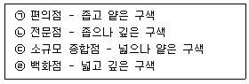
- ㉠, ㉡
- ㉢, ㉣
- ㉠, ㉡, ㉢
- ㉡, ㉢, ㉣
- ㉠, ㉡, ㉢, ㉣
(정답률: 55%)
47. 도·소매업체들의 유통경로 수익성 평가에 활용되는 전략적 이익모형(strategic profit model)의 주요 재무 지표에 해당하지 않는 것은?
- 순매출이익률
- 총자산회전율
- 레버리지비율
- 투자수익률
- 총자본비용
(정답률: 34%)
48. 아래 글상자에서 설명하는 유통마케팅자료 조사기법으로 옳은 것은?
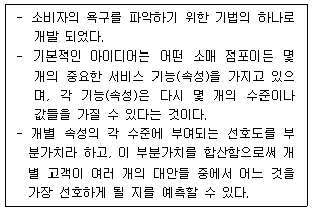
- 컨조인트 분석
- 다차원 척도법
- 요인분석
- 군집분석
- 시계열분석
(정답률: 50%)
49. 다음 중 판매사원의 상품판매과정의 7단계를 순서대로 나열한 것으로 가장 옳은 것은?
- 가망고객 발견 및 평가 → 사전접촉(사전준비) → 설명과 시연 → 접촉 → 이의처리 → 계약(구매권유) → 후속조치
- 가망고객 발견 및 평가 → 사전접촉(사전준비) → 설명과 시연 → 이의처리 → 접촉 → 계약(구매권유) → 후속조치
- 가망고객 발견 및 평가 → 사전접촉(사전준비) → 접촉 → 설명과 시연 → 이의처리 → 계약(구매권유) → 후속조치
- 사전접촉(사전준비) → 가망고객 발견 및 평가 → 접촉 → 설명과 시연 → 이의처리 → 계약(구매권유) → 후속조치
- 사전접촉(사전준비) → 가망고객 발견 및 평가 → 접촉 → 설명과 시연 → 이의처리 → 후속조치 → 계약 (구매권유)
(정답률: 53%)
50. 다음 중 마케팅믹스 요소인 4P 중 유통(place)을 구매자의 관점인 4C로 표현한 것으로 옳은 것은?
- 고객비용(customer cost)
- 편의성(convenience)
- 고객문제해결(customer solution)
- 커뮤니케이션(communication)
- 고객맞춤화(customization)
(정답률: 58%)
51. CRM(Customer Relationship Management)과 대중마케팅 (mass marketing)의 차별적 특성으로 옳지 않은 것은?
- 목표고객 측면에서 대중마케팅이 불특정 다수를 대상으로 한다면 CRM은 고객 개개인을 대상으로 하는 일대일 마케팅을 지향한다.
- 커뮤니케이션 방식 측면에서 대중마케팅이 일방향 커뮤니케이션을 지향한다면 CRM은 쌍방향적이면서도 개인적인 커뮤니케이션이 필요하다.
- 생산방식 측면에서 대중마케팅은 대량생산, 대량판매를 지향했다면 CRM은 다품종 소량생산 방식을 지향한다.
- CRM은 개별 고객에 대한 상세한 데이터베이스를 구축해야만 가능하다는 점에서 대중마케팅과 두드러진 차이를 보인다.
- 소비자 욕구 측면에서 대중마케팅은 목표고객의 특화된 구매욕구의 만족을 지향하는 반면 CRM은 목표고객들의 동질적 욕구를 만족시키려고 한다.
(정답률: 70%)
52. 가격결정방법 및 가격전략과 그 내용의 연결로 옳지 않은 것은?
- 원가기반가격결정 - 제품원가에 표준이익을 가산하는 방식
- 경쟁중심가격결정 - 경쟁사 가격과 비슷하거나 차이를 갖도록 결정
- 목표수익률가격결정 - 초기 투자자본에 목표수익을 더하여 가격을 결정하는 방식
- 가치기반가격결정 - 구매자가 지각하는 가치를 가격 결정의 중심 요인으로 인식
- 스키밍가격결정 - 후발주자가 시장침투를 위해 선두 기업보다 낮은 가격으로 결정
(정답률: 60%)
53. 아래 글상자는 제품수명주기 중 어느 단계에 대한 설명이다. 이 단계에 해당하는 상품관리전략으로 가장 옳지 않은 것은?
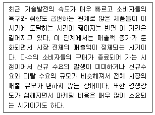
- 기존제품으로써 새로운 소비자의 구매 유도
- 기존소비자들의 소비량 증대
- 기존제품의 새로운 용도 개발
- 기존제품 품질향상과 신규시장 개발
- 제품확장 및 품질보증 도입
(정답률: 36%)
54. 아래 글상자에서 설명하는 가격전략으로 가장 옳은 것은?
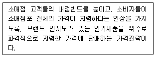
- 상품묶음(bundling) 가격전략
- EDLP(Every Day Low Price) 가격전략
- 노세일(no sale) 가격전략
- 로스리더(loss leader) 가격전략
- 단수가격(odd-pricing) 전략
(정답률: 56%)
55. 아래 글상자의 사례에서 설명하고 있는 유통업체 마케팅의 환경요인으로 가장 옳은 것은?
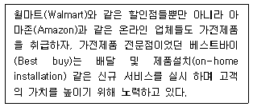
- 사회·문화 환경
- 경쟁 환경
- 기술 환경
- 경제 환경
- 법 환경
(정답률: 75%)
56. 제조업체의 중간상 촉진활동으로 옳지 않은 것은?
- 프리미엄
- 협동광고
- 중간상광고
- 판매원 인센티브
- 소매점 판매원 훈련
(정답률: 54%)
57. 아래 글상자는 마케팅과 고객관리를 위해 필요한 고객정보 들이다. 다음 중 RFM(Recency, Frequency, Monetary) 분석법을 사용하기 위해 수집해야 할 고객정보로 옳은 것은?
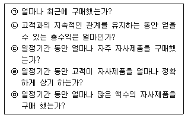
- ㉠, ㉡, ㉢
- ㉡, ㉣, ㉤
- ㉡, ㉢, ㉤
- ㉢, ㉣, ㉤
- ㉠, ㉢, ㉤
(정답률: 60%)
58. 촉진믹스전략 가운데 푸시(push)전략에 대한 설명으로 옳지 않은 것은?
- 제조업체가 최종 소비자들을 대상으로 촉진믹스를 사용하여 이들이 소매상에게 제품을 요구하도록 하는 전략이다.
- 푸시전략 방법에서 인적판매와 판매촉진은 중요한 역할을 한다.
- 판매원은 도매상이 제품을 주문하도록 요청하고 판매지원책을 제공한다.
- 푸시전략은 유통경로 구성원들이 고객에게까지 제품을 밀어내도록 하는 것이다.
- 수요를 자극하기 위해서 제조업체가 중간상에게 판매촉진 프로그램을 제공한다.
(정답률: 53%)
59. 다양화되고 개성화된 소비자들의 기본욕구에 대처하기 위해 도입된 것으로서, 제조업체의 입장 대신 소비자의 입장에서 상품을 다시 분류하는 머천다이징으로 가장 옳은 것은?
- 크로스 머천다이징
- 인스토어 머천다이징
- 스크램블드 머천다이징
- 리스크 머천다이징
- 카테고리 머천다이징
(정답률: 35%)
60. POP 광고에 대한 설명으로 옳지 않은 것은?
- POP광고는 판매원 대신 상품의 정보(가격, 용도, 소재, 규격, 사용법, 관리법 등)를 알려 주기도 한다.
- POP광고는 매장의 행사분위기를 살려 상품판매의 최종단계까지 연결시키는 역할을 수행해야 한다.
- POP광고는 청중을 정확히 타겟팅하기 좋기 때문에 길고 자세한 메시지 전달에 적합하다.
- POP광고는 판매원의 도움을 대신하여 셀프판매를 가능하게 한다.
- POP광고는 찾고자 하는 매장 및 제품을 안내하여 고객이 빠르고 편리하게 쇼핑을 할 수 있도록 도와 주어야 한다.
(정답률: 71%)
61. 아래 글상자의 ㉠과 ㉡에서 설명하는 진열방식으로 옳은 것은?
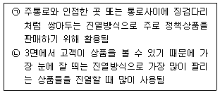
- ㉠ 곤도라진열, ㉡ 엔드진열
- ㉠ 섬진열, ㉡ 벌크진열
- ㉠ 측면진열, ㉡ 곤도라진열
- ㉠ 섬진열, ㉡ 엔드진열
- ㉠ 곤도라진열, ㉡ 벌크진열
(정답률: 52%)
62. 소매점의 공간, 조명, 색채에 대한 설명으로 가장 옳지 않은 것은?
- 레일조명은 고객 쪽을 향하는 것보다는 상품을 향하는 것이 좋다.
- 조명의 색온도가 너무 높으면 고객이 쉽게 피로를 느낄 수 있다.
- 벽면에 거울을 달거나 점포 일부를 계단식으로 높이면 실제 점포보다 넓어 보일 수 있다.
- 푸른색 조명보다 붉은색 조명 위에 생선을 진열할 때 더 싱싱해 보인다.
- 소매점 입구에 밝고 저항감이 없는 색을 사용하면 사람들을 자연스럽게 안으로 끌어들일 수 있다.
(정답률: 73%)
63. 아래 글상자의 ㉠과 ㉡을 설명하는 용어들의 짝으로 옳은 것은?
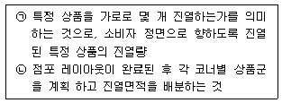
- ㉠ 조닝, ㉡ 페이싱
- ㉠ 페이싱, ㉡ 조닝
- ㉠ 레이아웃, ㉡ 조닝
- ㉠ 진열량, ㉡ 블록계획
- ㉠ 진열량, ㉡ 페이싱
(정답률: 62%)
64. 소매업태 발전에 관한 이론 및 가설에 대한 옳은 설명들 만을 모두 묶은 것은?
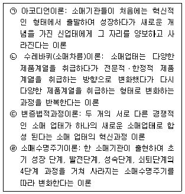
- ㉠, ㉡
- ㉡, ㉢
- ㉢, ㉣
- ㉠, ㉡, ㉢
- ㉠, ㉡, ㉢, ㉣
(정답률: 60%)
65. 충동구매를 유발하려는 목적의 점포 레이아웃 방식으로 가장 옳은 것은?
- 자유형 레이아웃(free flow layout)
- 경주로식 레이아웃(racefield layout)
- 격자형 레이아웃(grid layout)
- 부티크형 레이아웃(boutique layout)
- 창고형 레이아웃(warehouse layout)
(정답률: 50%)
66. 중간상 포트폴리오 분석에 대한 설명으로 옳지 않은 것은?
- 경제성장률로 조정된 중간상의 이익성장률과 특정 제품군에 대한 중간상의 매출액 중 자사제품 매출액의 점유율이라는 두 개의 차원으로 구성된다.
- 공격적인 투자전략은 적극적이며 급속한 성장을 보이는 중간상에게 적용한다.
- 방어전략은 성장 중이면서 현재 자사와 탄탄한 거래 관계를 가지는 중간상에게 적용하는 거래전략이다.
- 전략적 철수전략을 사용하는 경우 제조업자들은 중간상에게 주던 공제를 줄이는 것이 바람직하다.
- 포기전략은 마이너스 성장률과 낮은 시장점유율을 보이는 중간상에게 적용한다.
(정답률: 22%)
67. 다음 중 포지셔닝 전략에 대한 설명으로 가장 옳지 않은 것은?
- 경쟁자와 차별화된 서비스 속성으로 포지셔닝 하는 방법은 서비스 속성 포지셔닝이다.
- 최고의 품질 또는 가장 저렴한 가격으로 서비스를 포지셔닝 하는 것을 가격 대 품질 포지셔닝이라 한다.
- 여성 전용 사우나, 비즈니스 전용 호텔 등의 서비스는 서비스 이용자를 기준으로 포지셔닝 한 예이다.
- 타깃 고객 스스로 자신의 사용용도에 맞출 수 있도록 서비스를 표준화·시스템화한 것은 표준화에 의한 포지셔닝이다.
- 경쟁자와 비교해 자사의 서비스가 더 나은 점이나 특이한 점을 부각시키는 것은 경쟁자 포지셔닝 전략이다.
(정답률: 49%)
68. 다음 글상자에서 공통으로 설명하는 도매상으로 옳은 것은?
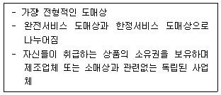
- 제조업자 도매상
- 브로커
- 대리인
- 상인도매상
- 수수료상인
(정답률: 63%)
69. 할인가격정책(high/low pricing)에 대한 상시저가정책(EDLP: Every Day Low Price)의 상대적 장점으로 가장 옳지 않은 것은?
- 재고의 변동성 감소
- 가격변경 빈도의 감소
- 평균 재고수준의 감소
- 판매인력의 변동성 감소
- 표적시장의 다양성 증가
(정답률: 53%)
70. 유통업체 브랜드(PB)에 대한 설명으로 가장 옳지 않은 것은?
- PB는 유통업체의 독자적인 브랜드명, 로고, 포장을 갖는다.
- PB는 대규모 생산과 대중매체를 통한 광범위한 광고를 수행하는 것이 일반적이다.
- 대형마트, 편의점, 온라인 소매상 등에서 PB의 비중을 증가시키고 있다.
- PB를 통해 해당 유통업체에 대한 고객 충성도를 증가시킬 수 있다.
- 유통업체는 PB 도입을 통해 중간상마진을 제거하고 추가이윤을 남길 수 있다.
(정답률: 65%)
4과목: 유통정보
71. 유통정보 분석을 위해 활용되는 데이터 분석 기법으로 성격이 다른 것은?
- 협업적 필터링(collaborative filtering)
- 딥러닝(deep learning)
- 의사결정나무(decision tree)
- 머신러닝(machine learning)
- 군집분석(clustering analysis)
(정답률: 44%)
72. 4차 산업혁명시대에 유통업체의 대응 방안에 대한 설명으로 옳지 않은 것은?
- 유통업체들은 보다 효율적인 유통업무 처리를 위해 최신 정보기술을 활용하고 있다.
- 유통업체들은 상품에 대한 재고관리에 있어, 정보시스템을 도입해 효율적으로 재고를 관리하고 있다.
- 유통업체들은 온라인과 오프라인을 연계한 융합기술을 이용한 판매 전략을 활용하고 있다.
- 유통업체들은 보다 철저한 정보보안을 위해 통신 네트워크로부터 단절된 상태로 정보를 관리한다.
- 유통업체들은 고객의 온라인 또는 오프라인 시장에서 구매 상품에 대한 대금 결제에 있어 핀테크(FinTech)와 같은 첨단 금융기술을 도입하고 있다.
(정답률: 76%)
73. 고객충성도 프로그램에 대한 설명으로 가장 옳지 않은 것은?
- 충성도 프로그램으로는 마일리지 프로그램과 우수고객 우대 프로그램 등이 있다.
- 충성도에는 행동적 충성도와 태도적 충성도가 있다.
- 충성도 프로그램은 단기적 측면보다는 장기적 측면에서 운영되어야 유통업체가 고객경쟁력을 확보할 수 있다.
- 충성도 프로그램을 운영하는데 있어, 우수고객을 우대하는 것이 바람직하다.
- 충성도 프로그램 운영에 있어 비금전적 혜택 보다는 금전적 혜택을 제공하는 것이 유통업체측면에서 보다 효율적이다.
(정답률: 69%)
74. QR(Quick Response)의 효과에 대한 설명으로 가장 옳지 않은 것은?
- 거래업체 간 정보 공유 체제가 구축된다.
- 제품 조달이 매우 빠른 속도로 이루어진다.
- 고객 참여를 통한 제품 기획이 이루어진다.
- 제품 공급체인의 효율성을 극대화할 수 있다.
- 제품 재고를 창고에 저장해 미래 수요에 대비하는 데 도움을 제공한다.
(정답률: 50%)
75. CRM활동을 고객관계의 진화과정으로 보면, 신규고객의 창출, 기존고객의 유지, 기존고객의 활성화 등으로 구분 되는데, 다음 중 기존고객 유지활동의 내용으로 가장 옳지 않은 것은?
- 직접반응광고
- 이탈방지 캠페인
- 맞춤 서비스의 제공
- 해지방어전담팀의 운영
- 마일리지프로그램의 운용
(정답률: 64%)
76. 아래 글상자에서 설명하는 인터넷 마케팅의 가격전략 형태로 가장 옳은 것은?
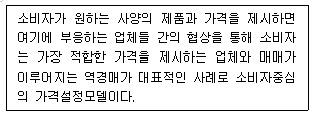
- 무가화
- 무료화
- 역가화
- 유료화
- 저가화
(정답률: 68%)
77. 고객관계관리를 위한 성과지표에 대한 설명으로 가장 옳지 않은 것은?
- 신규 캠페인 빈도는 마케팅 성과를 측정하기 위한 지표이다.
- 고객 불만 처리 시간은 서비스 성과를 측정하기 위한 지표이다.
- 고객유지율은 판매 성과를 위한 성과지표이다.
- 신규 판매자 수는 판매 성과를 측정하기 위한 지표이다.
- 캠페인으로 창출된 수익은 마케팅 성과를 측정하기 위한 지표이다.
(정답률: 47%)
78. e-비즈니스 유형과 주요 수익원천이 옳지 않은 것은?
- 온라인 판매 - 판매수익
- 검색서비스 - 광고료와 스폰서십
- 커뮤니티운영 - 거래수수료
- 온라인광고서비스 - 광고수입
- 전자출판 - 구독료
(정답률: 67%)
79. POS(Point of Sale) System 도입에 따른 제조업체의 효과에 대한 설명으로 가장 옳지 않은 것은?
- 경쟁상품과의 판매경향 비교
- 판매가격과 판매량의 상관관계
- 기후변동에 따른 판매동향 분석
- 신제품·판촉상품의 판매경향 파악
- 상품구색의 적정화에 따른 매출증대
(정답률: 34%)
80. 전자상거래 판매시스템에 대한 설명으로 가장 옳은 것은?
- 상향판매(up selling)는 고객들이 구매하고자 하는 제품에 대해, 보다 저렴한 상품을 고객들에게 제시해 주는 마케팅 기법이다.
- 역쇼루밍(reverse-showrooming)은 고객들이 특정 제품을 구매하고자 할 때, 보다 다양한 마케팅 정보를 제공해주는 마케팅 기법이다.
- 교차판매(cross selling)는 고객들이 저렴한 제품을 구매하는데 도움을 제공한다.
- 옴니채널(omni-channel)은 온라인과 오프라인 채널을 통합함으로써 보다 개선된 쇼핑환경을 고객들에게 제공해준다.
- 프로슈머(prosumer)는 전문적인 쇼핑을 하는 소비자를 의미한다.
(정답률: 67%)
81. 바코드(Bar code)에 대한 설명으로 가장 옳지 않은 것은?
- 바코드는 바와 스페이스로 구성된다.
- 바코드는 상하좌우로 4곳에 코너 마크가 표시되어 있다.
- 바코드는 판독기를 통해 바코드를 읽기 위해서는 바코드의 시작과 종료를 알려주기 위해 일정 공간의 여백을 둔다.
- 바코드 시스템은 체계적인 재고관리를 지원해준다.
- 바코드 시스템 구축은 RFID 시스템 구축과 비교해, 구축 비용이 많이 발생한다.
(정답률: 64%)
82. RFID의 작동원리에 대한 설명으로 가장 옳지 않은 것은?
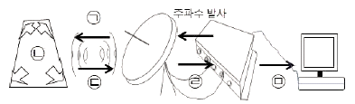
- ㉠ - 리더에서 안테나를 통해 발사된 주파수가 태그에 접촉한다.
- ㉡ - 무선신호는 태그의 자체 안테나에서 수신한다.
- ㉢ - 태그는 주파수에 반응하여 입력된 데이터를 안테나로 전송한다.
- ㉣ - RF 필드에 구성된 안테나에서 무선 신호를 생성하고 전파한다.
- ㉤ - 리더는 데이터를 해독하여 Host 컴퓨터로 전달 한다.
(정답률: 47%)
83. 지식의 창조는 암묵지를 어떻게 활성화, 형식지화 하여 활용할 것인가의 문제라고 볼 수 있다. 암묵지와 형식지를 활용한 지식창조 프로세스 순서대로 나타낸 것으로 가장 옳은 것은?
- 표출화 - 내면화 - 공동화 - 연결화
- 표출화 - 연결화 - 공동화 - 내면화
- 연결화 - 공동화 - 내면화 - 표출화
- 공동화 - 표출화 - 연결화 - 내면화
- 내면화 - 공동화 - 연결화 - 표출화
(정답률: 34%)
84. 인스토어마킹(instore marking)과 소스마킹(source marking)에 대한 설명으로 가장 옳은 것은?
- 인스토어마킹은 부패하기 쉬운 농산물에 적용할 수 있다.
- 인스토어마킹을 통해 바코드를 붙이는데 있어, 바코드에는 국가식별코드, 제조업체코드, 상품품목코드, 체크 디지트로 정형화되어 있어, 유통업체가 자유롭게 설정 할 수 없기에 최근 인스토어마킹은 거의 이용되지 않고 있다.
- 제조업체의 경우 인스토어마킹에 있어, 국제표준화 기구에서 정의한 공통표준코드를 이용한다.
- 소스마킹은 유통업체 내의 가공센터에서 마킹할 수 있다.
- 소스마킹은 상점 내에서 바코드 프린트를 이용해 바코드 라벨을 출력하기 때문에 추가적인 비용이 발생한다.
(정답률: 49%)
85. 지식 포착 기법에 대한 설명으로 가장 옳지 않은 것은?
- 인터뷰 - 개인의 암묵적 지식을 형식적 지식으로 전환하는데 사용하는 기법이다.
- 현장관찰 - 관찰대상자가 문제를 해결하는 행동을 할 때 관찰, 해석, 기록하는 프로세스이다.
- 스캠퍼 - 비판을 허용하지 않는다는 가정으로 둘 이상의 구성원들이 자유롭게 아이디어를 생산하는 비구조적 접근방법이다.
- 스토리 - 조직학습을 증대시키고, 공통의 가치와 규칙을 커뮤니케이션하고, 암묵적 지식의 포착, 코드화, 전달을 위한 뛰어난 도구이다.
- 델파이 방법 - 다수 전문가의 지식포착 도구로 사용되며, 일련의 질문서가 어려운 문제를 해결하는데 대한 전문가의 의견을 수렴하기 위해 사용된다.
(정답률: 53%)
86. 판매시점정보관리시스템(POS)의 설명으로 가장 옳지 않은 것은?
- 물품을 판매한 시점에 정보를 수집한다.
- RFID 기술이 등장함에 따라 상용화되어 도입되기 시작한 시스템이다.
- 상품이 얼마나 팔렸는가? 어떠한 상품이 팔렸는가? 등의 정보를 수집·저장한다.
- 개인의 구매실적, 구매성향 등에 관한 정보를 수집·저장한다.
- 업무 처리 속도 증진, 오타 및 오류 방지, 점포의 사무 단순화 등의 단순이익 효과를 얻을 수 있다.
(정답률: 49%)
87. 온라인(모바일 포함)·오프라인을 넘나들면서 제품의 정보를 수집하여 최적의 제품을 찾아내는 소비자를 일컫는 용어로 가장 옳은 것은?
- 멀티쇼퍼(Multi-shopper)
- 믹스쇼퍼(Mix-shopper)
- 크로스쇼퍼(Cross-shopper)
- 엑스쇼퍼(X-shopper)
- 프로슈머(Prosumer)
(정답률: 54%)
88. NoSQL의 특성으로 가장 옳지 않은 것은?
- 페타바이트 수준의 데이터 처리 수용이 가능한 느슨한 데이터 구조를 제공하므로서 대용량 데이터 처리 용이
- 데이터 항목을 클러스터 환경에 자동적으로 분할하여 적재
- 정의된 스키마에 따라 데이터를 저장
- 화면과 개발로직을 고려한 데이터 셋을 구성하여 일반적인 데이터 모델링이라기보다는 파일구조 설계에 가까움
- 간단한 API Call 또는 HTTP를 통한 단순한 접근 인터페이스를 제공
(정답률: 31%)
89. 보안에 대한 위협요소별 사례를 설명한 것으로 가장 옳지 않은 것은?
- 기밀성 - 인가되지 않은 사람의 비밀정보 획득, 복사 등
- 무결성 - 정보를 가로채어 변조하여 원래의 목적지로 전송하는 것
- 무결성 - 정보의 일부 또는 전부를 교체, 삭제 및 데이터 순서의 재구성
- 기밀성 - 부당한 환경에서 정당한 메시지의 재생, 지불요구서의 이중제출 등
- 부인방지 - 인가되지 않은 자가 인가된 사람처럼 가장하여 비밀번호를 취득하여 사용하는 것
(정답률: 40%)
90. 아래 글상자의 내용을 근거로 유통정보시스템의 개발 절차를 순차적으로 나열한 것으로 가장 옳은 것은?
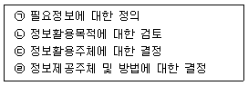
- ㉠ - ㉡ - ㉢ - ㉣
- ㉠ - ㉢ - ㉡ - ㉣
- ㉠ - ㉣ - ㉡ - ㉢
- ㉡ - ㉠ - ㉣ - ㉢
- ㉡ - ㉢ - ㉠ - ㉣
(정답률: 17%)